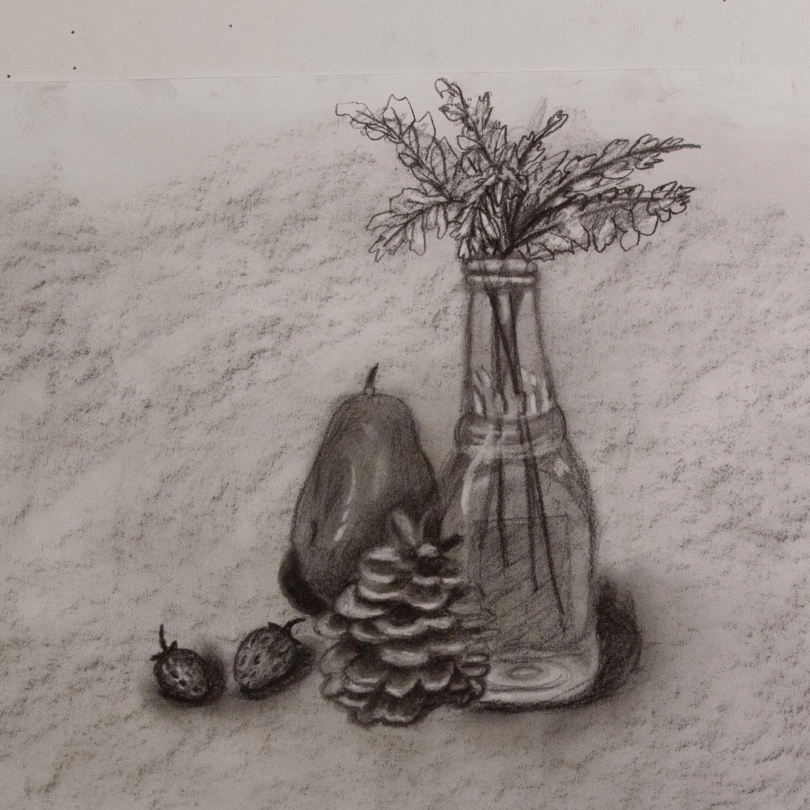

Collected Remains
About The Piece
This piece was built from found objects collected around the studio, arranged like a collage to create a still life that doesn’t exist in reality—but feels grounded in form, weight, and texture.
Rendered entirely in charcoal, I focused on contrast and surface—the shine of glass, the softness of fruit, the roughness of pinecones and stems. Without color, the drawing depends fully on texture to feel dimensional and tactile.
Collected Remains is both an observational study and a constructed world—a quiet arrangement of forgotten things made meaningful by how they were chosen and placed.